Manual 1 Quimica / Semestre 1 Completo
Unidad cero, materia, agua, aire y material final complementario. Version en hoja carta para revision completa del semestre.
Manual de Quimica · Unidad 0
Metodo, medicion, unidades e incertidumbre para convertir una sospecha sobre el agua escolar en evidencia defendible.
El primer reporte del bebedero dice: "el agua se ve rara". Esa frase no alcanza para tomar una decision responsable. Puede iniciar una investigacion, pero todavia no es evidencia.
El equipo de estudiantes recibe una tarea concreta: convertir una impresion en datos que otra persona pueda revisar. Para lograrlo necesita registrar fecha, punto de muestreo, volumen, temperatura, color, olor, unidades y margen de error.
La unidad cero funciona como el idioma comun del laboratorio. Antes de hablar de atomos, enlaces o reacciones, el grupo debe aprender a preguntar, medir y reportar sin exagerar lo que sabe.
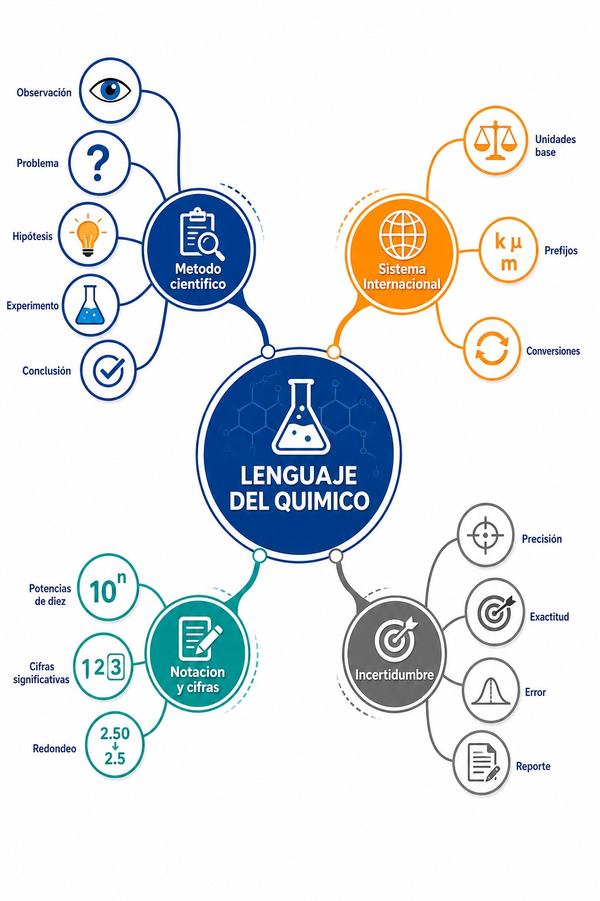
Antes de tomar instrumentos, el grupo debe aclarar que quiere saber. Responde con frases breves; no busques definiciones perfectas todavia.
El metodo cientifico no es una lista para memorizar. Es una forma ordenada de reducir errores. En el caso del bebedero, empieza con una observacion, continua con un problema medible, propone una hipotesis y exige una prueba.
Una buena hipotesis debe poder fallar. "El agua esta contaminada" es demasiado general. "La muestra del bebedero tendra mayor carga microbiana que el control por acumulacion de materia organica" ya se puede contrastar.
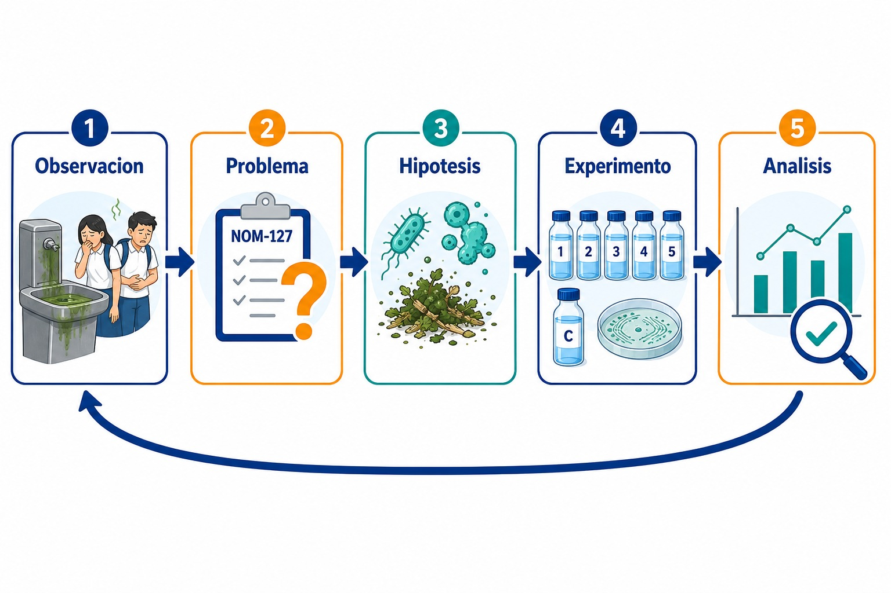
Medir sin unidad es dejar el dato incompleto. No es igual escribir "temperatura: 27" que "temperatura: 27 °C". La unidad permite comparar, repetir y detectar errores.
En quimica escolar se usan con frecuencia masa, volumen, temperatura, cantidad de sustancia y tiempo. El Sistema Internacional ayuda a que todos los equipos hablen el mismo idioma.
Convertir no significa cambiar el fenomeno, sino expresarlo en otra escala. Un litro de agua sigue siendo el mismo volumen aunque se escriba como 1000 mL.
La regla practica es cancelar unidades: si la unidad no deseada queda arriba y abajo de una fraccion, desaparece y deja la unidad buscada.
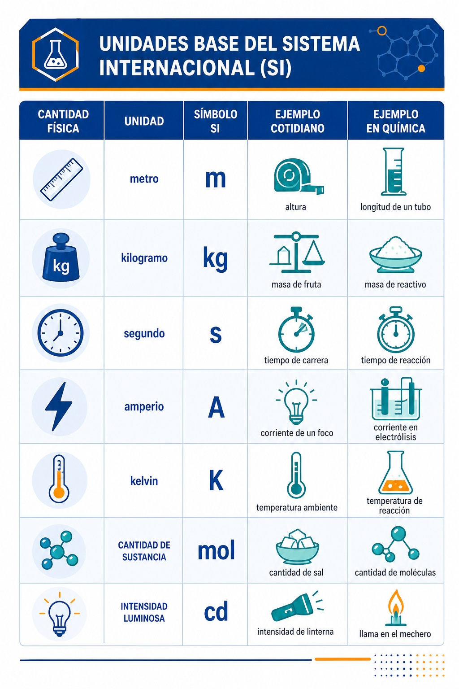
Algunos datos del laboratorio son muy pequenos o muy grandes. La notacion cientifica evita cadenas largas de ceros y permite comparar escalas. Por ejemplo, una concentracion pequena puede expresarse como 2.5 x 10^-4 mol/L.
Las cifras significativas indican hasta donde llega la confianza de una medicion. Un instrumento sencillo no debe producir un reporte con precision de laboratorio avanzado.
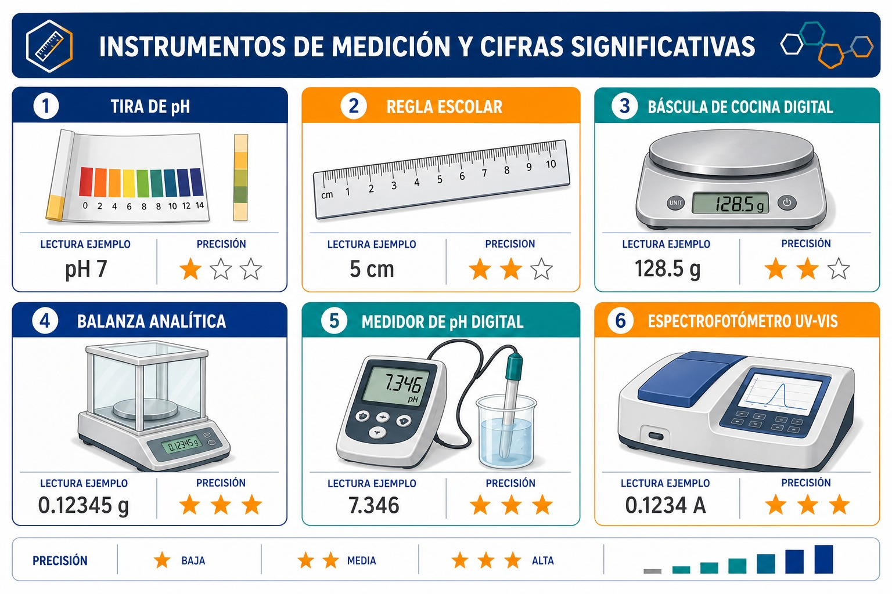
Precision significa que varias mediciones se parecen entre si. Exactitud significa que el resultado se acerca al valor aceptado. Un equipo puede ser preciso pero estar mal calibrado; por eso sus datos se agrupan lejos del valor correcto.
La incertidumbre no es una disculpa: es una parte honesta del dato. Decir 25.0 ± 0.5 °C comunica mas que escribir solo 25 °C.
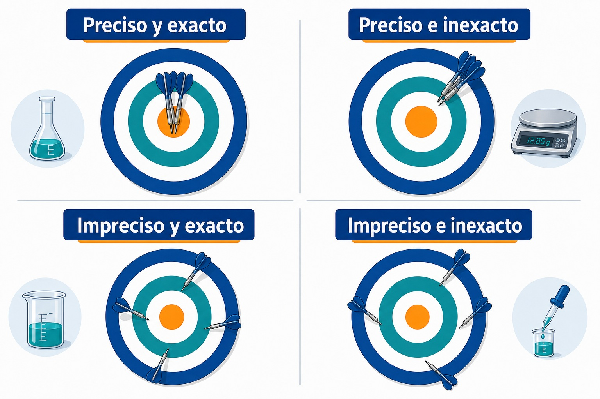
Objetivo. Registrar una muestra con datos suficientes para que otro equipo pueda repetir el procedimiento y revisar la confiabilidad del resultado.
Materiales. Frasco limpio, etiqueta, marcador, termometro, regla, vaso medidor, cronometro y hoja de registro.
Producto. Bitacora completa con tabla de datos, observacion inicial, hipotesis y comentario de incertidumbre.
60% practica| Campo | Dato esperado | Por que importa |
|---|---|---|
| Punto de muestreo | Bebedero, llave, cisterna o control | Permite comparar ubicaciones. |
| Fecha y hora | Registro completo | Relaciona datos con uso y temperatura ambiente. |
| Volumen | mL o L | Define cantidad de muestra. |
| Temperatura | °C con instrumento indicado | Afecta solubilidad y actividad biologica. |
| Observacion | Color, olor, particulas | Guia hipotesis sin reemplazar mediciones. |
Escribe una hipotesis medible para la muestra. Debe incluir una comparacion contra otra muestra o contra un valor esperado.
Si una medicion cambia mucho entre intentos, no se elige el dato "mas bonito". Se revisa instrumento, tecnica y condiciones antes de reportar.
El dato final debe incluir unidad y, cuando sea posible, rango de incertidumbre.
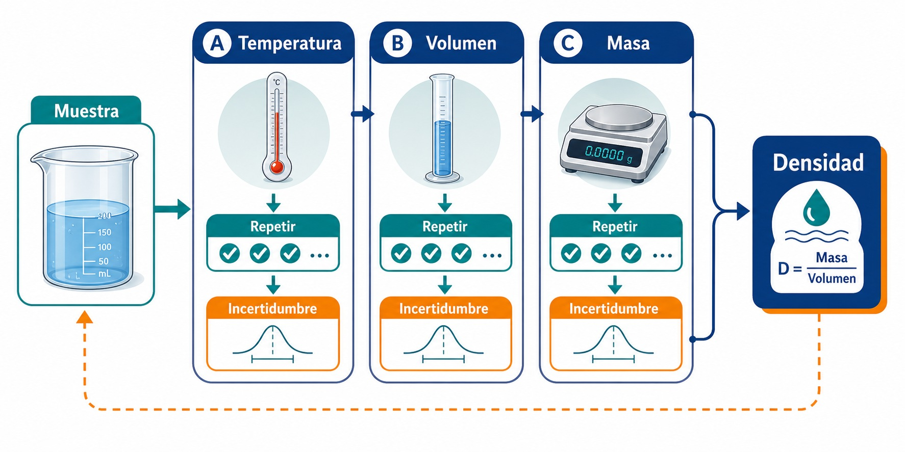
Rol. Equipo tecnico escolar encargado de preparar el primer reporte del bebedero.
Escenario. La direccion pide evidencia antes de decidir si se cierra temporalmente el bebedero.
Entregable. Archivo `U0_bitacora_bebedero.pdf` con bitacora, tabla de mediciones, hipotesis y comentario de incertidumbre.
| Criterio | Logro basico | Logro solido | Logro destacado |
|---|---|---|---|
| Identificacion de muestra | Incluye nombre de muestra. | Incluye punto, fecha y responsable. | Permite repetir el muestreo sin aclaraciones. |
| Uso de unidades | Registra algunos datos con unidad. | Todos los datos numericos tienen unidad. | Convierte unidades cuando es necesario. |
| Hipotesis | Propone una idea general. | Propone una hipotesis medible. | Incluye comparacion y posible causa. |
| Incertidumbre | Menciona que puede haber error. | Identifica una fuente de error. | Explica como reducirla o reportarla. |
La unidad cero no busca resolver todavia el problema del bebedero. Su meta es preparar al grupo para hablar con datos. A partir de ahora, cada conclusion del manual debera apoyarse en una observacion, una medicion o una comparacion verificable.
Si solo pudieras repetir una medicion de tu bitacora antes de entregar el reporte, cual repetirias y por que?
Manual 1 Quimica / Semestre 1 / Unidad 1
Clasificacion de sustancias, mezclas, estructura atomica, tabla periodica, enlaces, mol y masa molar para analizar una muestra de agua escolar.
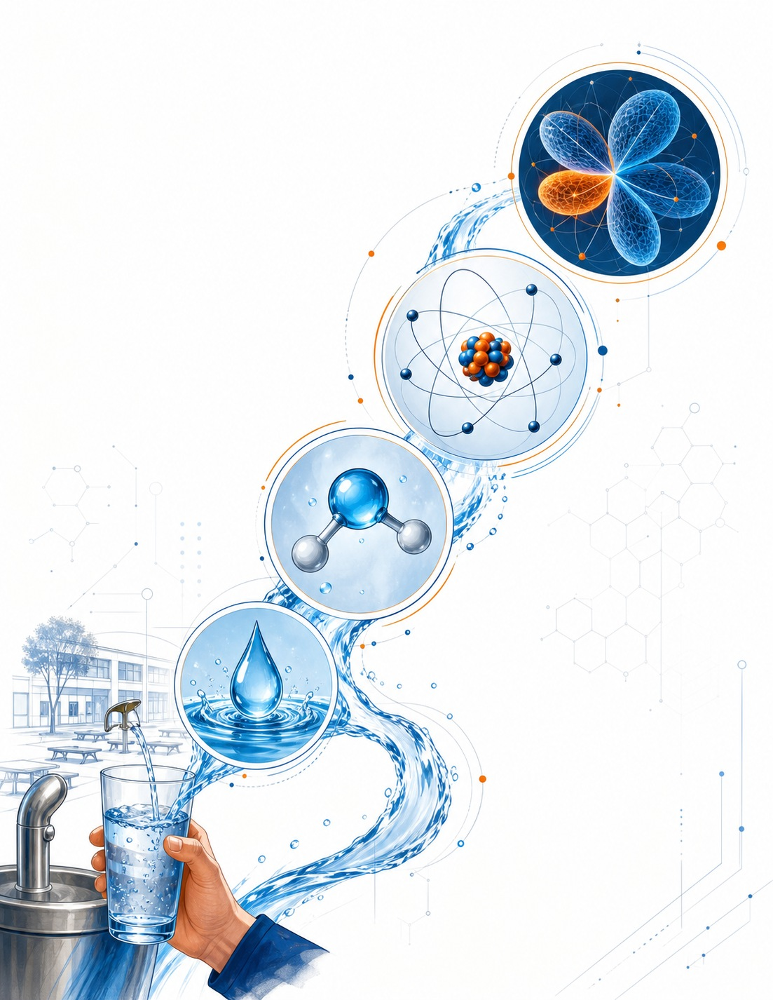
La unidad inicia con una historia simple: el agua del bebedero parece limpia, pero el equipo no puede decidir nada solo por el color. Antes de medir pH, dureza o contaminantes, necesita saber que tipo de materia esta observando.
La estrategia sera avanzar de lo visible a lo invisible. Primero se diferencia sustancia pura, mezcla, fase y componente. Despues se entra al nivel atomico para explicar por que algunas sustancias se disuelven, por que otras forman sedimento y como se calculan cantidades reales.
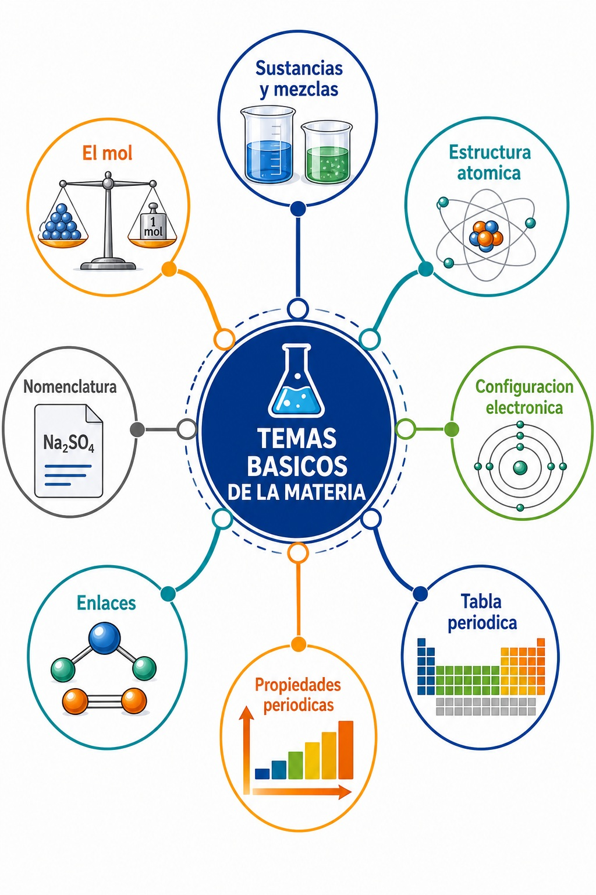
El equipo recibe una botella con agua tomada del bebedero. A simple vista se ve transparente, sin olor fuerte y sin particulas grandes. Una conclusion rapida diria: "esta limpia". La quimica pide una respuesta mas cuidadosa: lo que no se ve tambien puede estar presente.
En la muestra puede haber sales disueltas, gases del aire, cloro residual, minerales, polvo fino o particulas que no se detectan con la vista. La tarea inicial no es asustarse ni suponer; es nombrar con precision que podria estar ahi.
Una buena analogia es una sopa colada. Aunque no se vean todos los ingredientes, el sabor cambia porque algunas sustancias estan distribuidas en todo el liquido. En quimica ocurre algo similar: una mezcla homogenea puede parecer uniforme y aun asi contener muchos componentes.
Imaginar la materia como el inventario de una tienda ayuda a separar niveles. Una caja cerrada puede contener un solo producto, varios productos mezclados o paquetes de productos unidos. En quimica, esas opciones se parecen a sustancia pura, mezcla y compuesto.
Una muestra no responde por si sola. El estudiante debe mirarla, comparar datos, usar formulas y justificar con propiedades. La evidencia mejora cuando se combina observacion, lenguaje quimico y calculo.
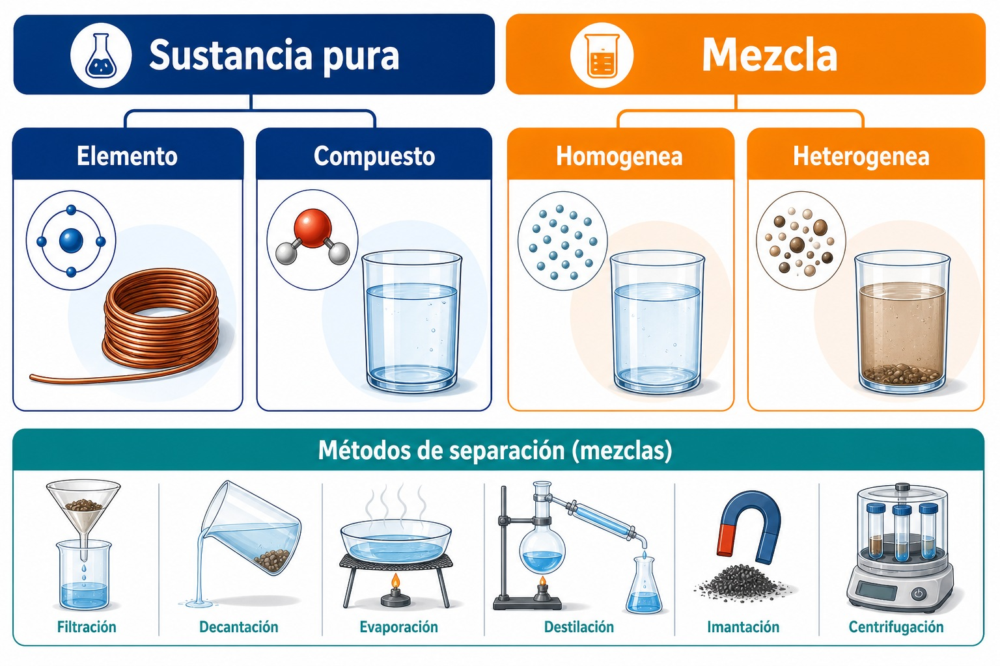
Materia es todo lo que tiene masa y ocupa espacio. En el caso del bebedero, la botella con agua, las sales disueltas, los gases disueltos y cualquier sedimento son materia. La masa indica cuanta materia hay; el volumen indica cuanto espacio ocupa.
| Magnitud | Simbolo | Unidad usual | Uso en la unidad |
|---|---|---|---|
| Masa | m | g, kg | Medir cantidad de muestra o soluto. |
| Volumen | V | mL, L, cm3 | Medir espacio ocupado por liquidos o recipientes. |
| Densidad | rho | g/mL, g/cm3 | Relacionar masa y volumen para identificar materiales. |
En esta formula, rho es densidad, m es masa y V es volumen. Si la masa esta en gramos y el volumen en mililitros, la densidad queda en g/mL. No se mezclan unidades sin convertir.
Una sustancia pura tiene composicion fija. Puede ser un elemento, como oxigeno, o un compuesto, como agua. Una mezcla tiene composicion variable: sus componentes pueden cambiar de proporcion sin dejar de ser mezcla.
| Tipo | Caracteristica | Ejemplo del caso | Como se reconoce |
|---|---|---|---|
| Elemento | Un solo tipo de atomo. | O2 disuelto | Simbolo de la tabla periodica. |
| Compuesto | Atomos unidos en proporcion fija. | H2O, NaCl | Formula quimica definida. |
| Mezcla homogenea | Una sola fase visible. | Agua con sales disueltas | No se distinguen componentes a simple vista. |
| Mezcla heterogenea | Dos o mas fases visibles. | Agua con arena | Se observan particulas o capas. |
Si la muestra del bebedero se ve uniforme, todavia no se debe llamar "sustancia pura". Primero se pregunta si contiene solutos invisibles. En agua potable, la respuesta casi siempre es si.
Una fase es una parte de la materia con apariencia uniforme. Un componente es una sustancia que forma parte de una mezcla. Una botella con agua clara puede tener una fase liquida, pero muchos componentes disueltos.
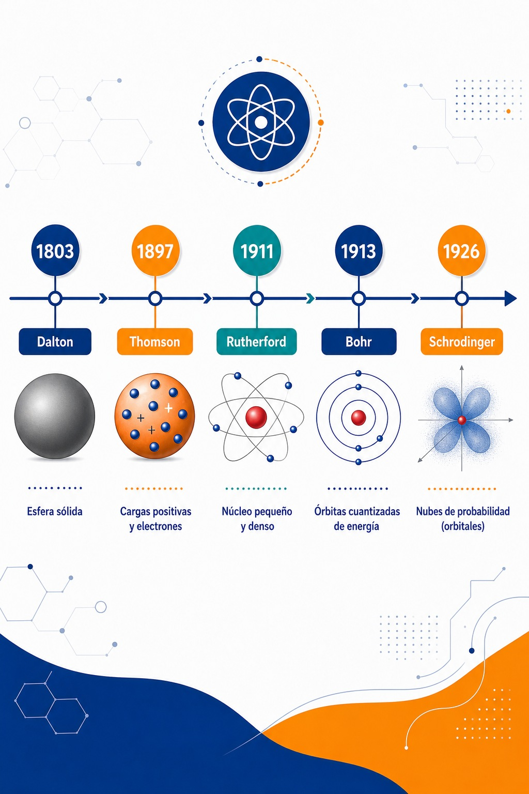
Puede ser mezcla homogenea si contiene solutos distribuidos en todo el volumen.
Indica mezcla heterogenea, como agua con aceite, arena o sedimento.
Para explicar por que una sal se disuelve o por que un material no se mezcla, hay que bajar al nivel atomico. El atomo tiene protones, neutrones y electrones. Los protones tienen carga positiva, los electrones carga negativa y los neutrones no tienen carga electrica.
| Particula | Carga | Ubicacion | Unidad o referencia |
|---|---|---|---|
| Proton | +1 | Nucleo | Define el numero atomico Z. |
| Neutron | 0 | Nucleo | Aporta masa al atomo. |
| Electron | -1 | Region externa | Participa en enlaces e iones. |
Si protones y electrones son iguales, el atomo es neutro. Si pierde electrones, queda positivo. Si gana electrones, queda negativo.
Un ion es un atomo o grupo de atomos con carga. En una muestra de agua, muchas sales no viajan como cristales completos, sino como iones separados. Por eso el agua puede conducir electricidad o dejar residuos minerales al evaporarse.
Ion con carga positiva. Ejemplos: Na+, Ca2+, Mg2+. Se forma cuando un atomo pierde electrones.
Ion con carga negativa. Ejemplos: Cl-, NO3-, SO42-. Se forma cuando un atomo o grupo gana electrones.
El simbolo (s) indica solido y (aq) indica disuelto en agua. Esta notacion ayuda a describir que paso con el compuesto.
La tabla periodica ordena los elementos por numero atomico y por semejanza de propiedades. No es una lista para memorizar de corrido; funciona como un mapa para predecir comportamiento.
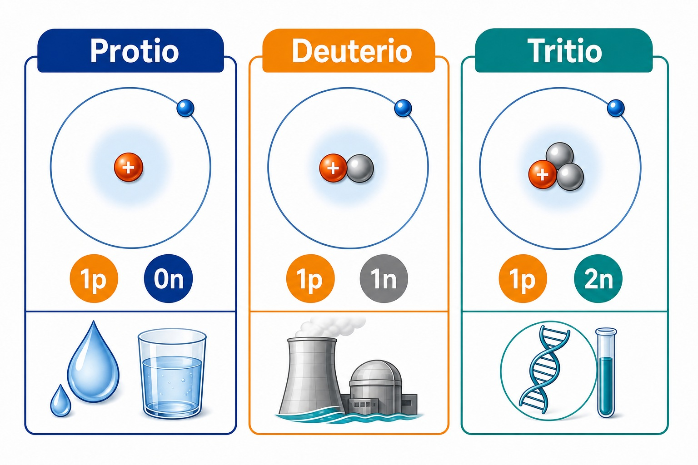
En el caso del agua, la tabla permite reconocer que sodio, calcio y magnesio son metales que suelen formar cationes. Cloro, oxigeno y azufre suelen participar en aniones o compuestos covalentes.
Los elementos de una misma familia tienen propiedades parecidas porque tienen configuraciones externas semejantes. Para esta unidad no se busca memorizar toda la tabla, sino reconocer patrones utiles.
| Zona o familia | Rasgo general | Ejemplo | Uso en el caso |
|---|---|---|---|
| Metales alcalinos | Forman cationes +1. | Na, K | Sales disueltas en agua. |
| Alcalinoterreos | Forman cationes +2. | Ca, Mg | Dureza del agua. |
| Halogenos | Forman aniones -1. | Cl | Cloruros o desinfeccion. |
| No metales | Forman enlaces covalentes. | O, H, C | Agua, gases y carbonatos. |
Si aparece Ca2+ en una muestra, que zona de la tabla te ayuda a justificar esa carga?
Un enlace quimico es la union entre atomos. La forma de union afecta propiedades como solubilidad, dureza, punto de fusion y conductividad. Para el caso del agua escolar, los enlaces explican por que algunas sustancias se separan en iones y otras permanecen como moleculas.
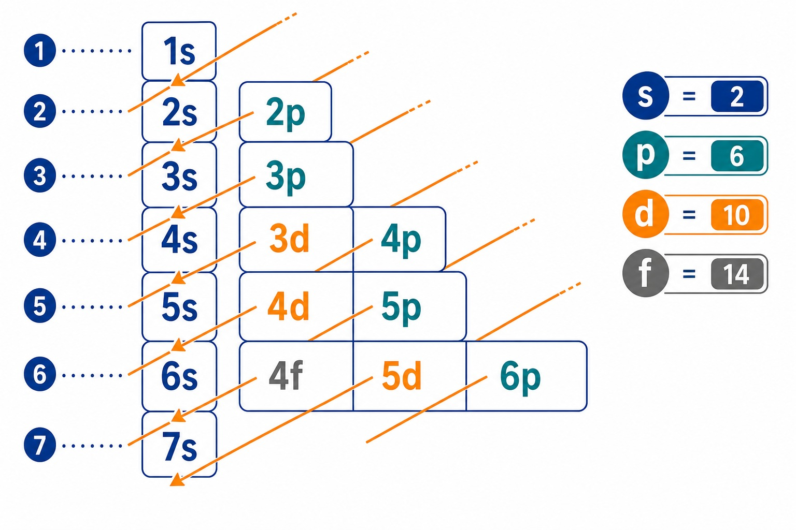
| Enlace | Idea clave | Ejemplo |
|---|---|---|
| Ionico | Transferencia de electrones entre metal y no metal. | NaCl |
| Covalente | Comparticion de electrones entre no metales. | H2O |
| Metalico | Electrones deslocalizados entre atomos metalicos. | Cu |
La solubilidad no es magia: depende de interacciones entre particulas. El agua es polar, por eso rodea iones y moleculas polares. Esto explica por que muchas sales se disuelven y por que otras sustancias no se mezclan bien.
Una molecula polar se parece a una pieza con dos lados electricos. El agua puede orientar sus lados hacia iones positivos o negativos y estabilizarlos.
Si el agua contiene NaCl, se esperan Na+ y Cl- dispersos. Si contiene aceite, se espera separacion visible porque la interaccion con el agua es debil.
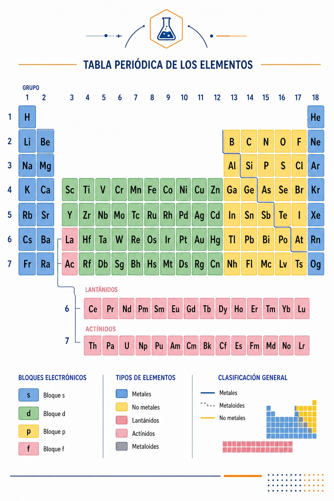
La densidad relaciona masa y volumen. Puede ayudar a comparar liquidos, solidos o soluciones, aunque por si sola no identifica todas las sustancias.
| Elemento de la formula | Significado | Unidad recomendada | Cuidado |
|---|---|---|---|
| rho | Densidad | g/mL o g/cm3 | Depende de temperatura y composicion. |
| m | Masa de la muestra | g | Restar la masa del recipiente si aplica. |
| V | Volumen ocupado | mL o cm3 | Leer a nivel del menisco en liquidos. |
Una muestra tiene m = 49.8 g y V = 50.0 mL. Entonces rho = 49.8 g / 50.0 mL = 0.996 g/mL. El resultado se parece a agua a temperatura ambiente.
El mol conecta el mundo visible de los gramos con el mundo invisible de las particulas. Si solo se pesa una sustancia, se tiene masa; si se calcula moles, se estima cuantas entidades quimicas participan.
| Elemento | Significado | Unidad | Como se obtiene |
|---|---|---|---|
| n | Cantidad de sustancia | mol | Resultado del calculo. |
| m | Masa medida | g | Balanza o dato del problema. |
| M | Masa molar | g/mol | Suma de masas atomicas de la formula. |
Un mol se parece a una docena, pero enorme. Docena significa 12 objetos; mol significa 6.022 x 1023 entidades.
La masa molar se calcula sumando la masa atomica de cada elemento multiplicada por la cantidad de atomos que aparece en la formula.
| Compuesto | Desarrollo | Masa molar |
|---|---|---|
| NaCl | Na = 22.99, Cl = 35.45 | 58.44 g/mol |
| H2O | 2(1.008) + 16.00 | 18.016 g/mol |
| CaCO3 | 40.08 + 12.01 + 3(16.00) | 100.09 g/mol |
El subindice afecta solo al elemento que acompana. En CaCO3, el 3 multiplica al oxigeno, no al calcio ni al carbono.
Cuando se necesita estimar cuantas particulas hay, se usa el numero de Avogadro. Esta unidad no exige contar particulas una por una; exige entender la escala.
| Elemento | Significado | Unidad | Dato usual |
|---|---|---|---|
| N | Numero de entidades | particulas, moleculas, iones | Resultado. |
| n | Cantidad de sustancia | mol | Dato calculado o dado. |
| NA | Numero de Avogadro | particulas/mol | 6.022 x 1023 |
Si hay 0.250 mol de NaCl, entonces N = 0.250 mol x 6.022 x 1023 particulas/mol = 1.51 x 1023 unidades formula.
La composicion porcentual permite saber que fraccion de la masa de un compuesto corresponde a cada elemento. Es util para comparar sustancias que parecen similares pero tienen distinta proporcion de elementos.
| Elemento | Significado | Unidad |
|---|---|---|
| % elemento | Porcentaje en masa del elemento dentro del compuesto. | % |
| masa del elemento | Suma de masas atomicas de ese elemento en la formula. | g por mol de compuesto |
| masa molar | Masa de 1 mol del compuesto completo. | g/mol |
En CaCO3, el calcio aporta 40.08 g por cada 100.09 g de compuesto, por eso su porcentaje aproximado es 40.0%.
La muestra deja 0.292 g de residuo seco al evaporar 250 mL de agua. El residuo se interpreta como mezcla de sales, no como una sola sustancia automaticamente. El dato permite estimar cantidad de solidos disueltos, pero no identifica todos los componentes.
| Dato | Valor | Unidad |
|---|---|---|
| Masa del residuo | 0.292 | g |
| Volumen de muestra | 250 | mL |
| Resultado | 0.001168 | g/mL |
Convertido a g/L: 0.001168 g/mL x 1000 mL/L = 1.168 g/L. Este dato se usa como evidencia, no como diagnostico completo.
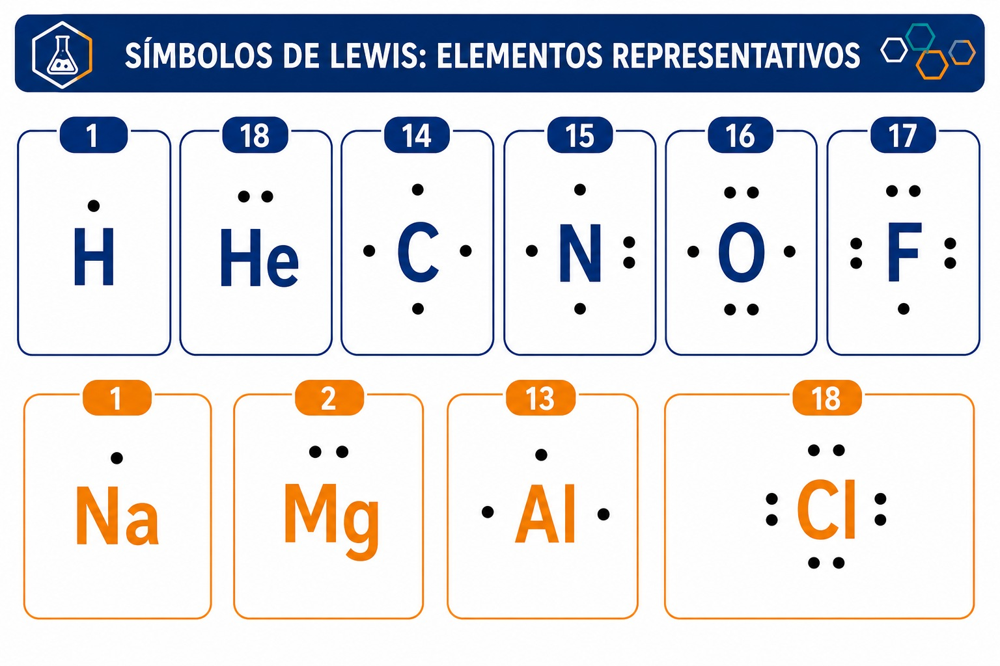
Clasificar componentes posibles del agua del bebedero y justificar cada decision con propiedades de la materia, estructura atomica, tabla periodica y calculo de masa molar.
| Elemento | Especificacion |
|---|---|
| Objetivo | Distinguir sustancias puras, mezclas, iones y compuestos relacionados con una muestra de agua. |
| Materiales | Tabla periodica, lista de sustancias, calculadora, ficha de clasificacion y datos simulados. |
| Producto | Cuadro de clasificacion con justificacion quimica y calculos basicos. |
| Criterio | No confundir mezcla con compuesto y no afirmar pureza sin evidencia. |
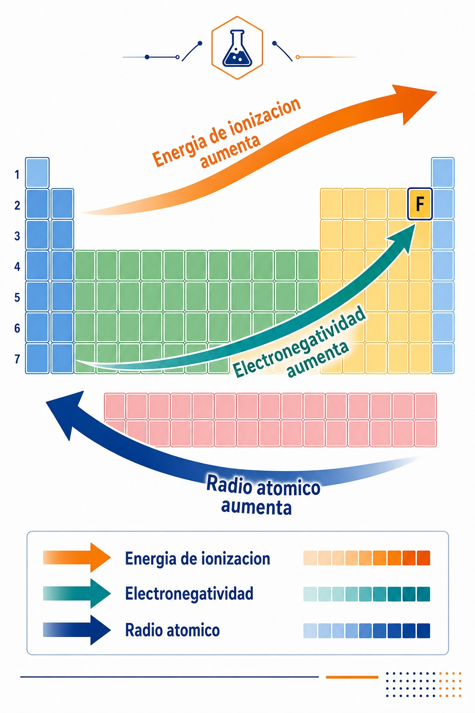
Usa la siguiente lista como ensayo antes del banco de ejercicios. El objetivo no es responder por memoria, sino explicar el criterio.
| Material | Clasificacion | Razon |
|---|---|---|
| H2O destilada | Compuesto | Formula definida y composicion fija. |
| NaCl solido | Compuesto ionico | Formado por Na+ y Cl-. |
| Agua de bebedero | Mezcla homogenea probable | Puede contener solutos invisibles. |
| Agua con arena | Mezcla heterogenea | Presenta fase solida visible. |
Explica en tres lineas por que "se ve transparente" no equivale a "es pura".
Situacion: un vaso contiene agua clara. Al evaporarla queda una mancha blanca. La observacion inicial era una sola fase visible, pero el residuo indica solutos. Por lo tanto, la muestra no debe clasificarse como sustancia pura.
La muestra se clasifica como mezcla homogenea antes de evaporar, porque se observa uniforme. El residuo seco muestra que habia componentes disueltos. La clasificacion se justifica con evidencia de separacion fisica.
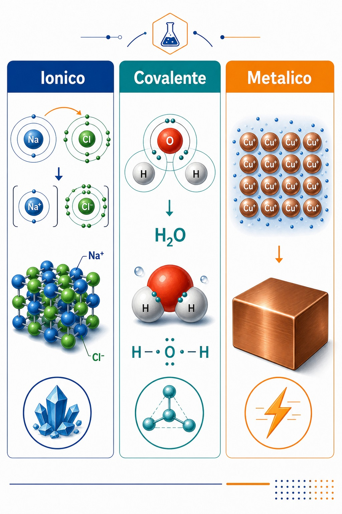
Calcular la masa molar de MgCl2 permite relacionar una masa pesada con moles de sustancia.
| Paso | Operacion | Resultado |
|---|---|---|
| 1 | Mg = 24.31 g/mol | 24.31 g/mol |
| 2 | Cl = 35.45 g/mol y hay 2 Cl | 70.90 g/mol |
| 3 | 24.31 + 70.90 | 95.21 g/mol |
La unidad final es mol porque gramos se cancelan con gramos por mol. Esta cancelacion es una verificacion importante.
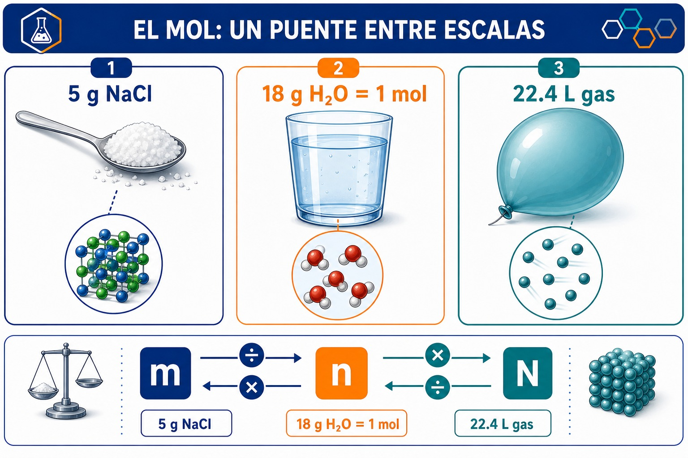
Una solucion de sal tiene masa de 102.4 g en un volumen de 100.0 mL. Calcula su densidad y compara con agua cercana a 1.00 g/mL.
La solucion es ligeramente mas densa que agua pura. Esa diferencia no identifica por si sola la sal, pero confirma que la composicion puede modificar propiedades fisicas.
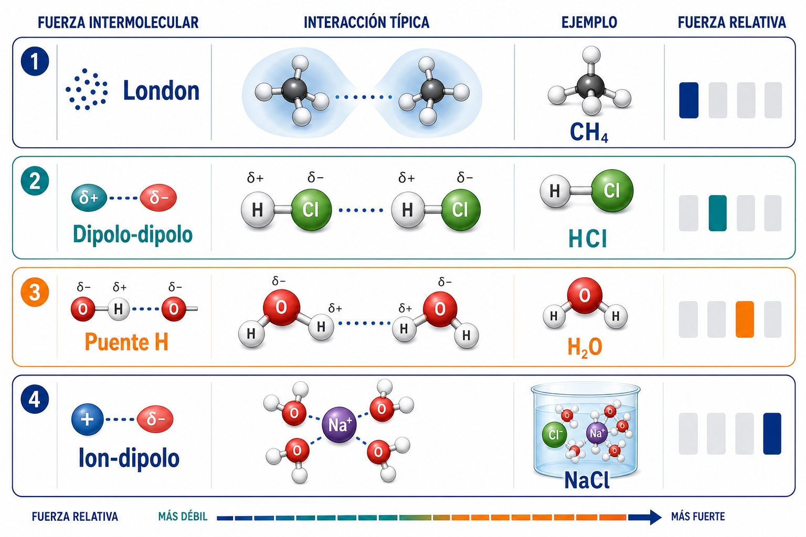
Resuelve los 20 ejercicios. Cada respuesta debe incluir dato, formula, sustitucion, resultado con unidad y una frase de interpretacion. Cuando el ejercicio sea de clasificacion, incluye razon quimica, no solo el nombre de la categoria.
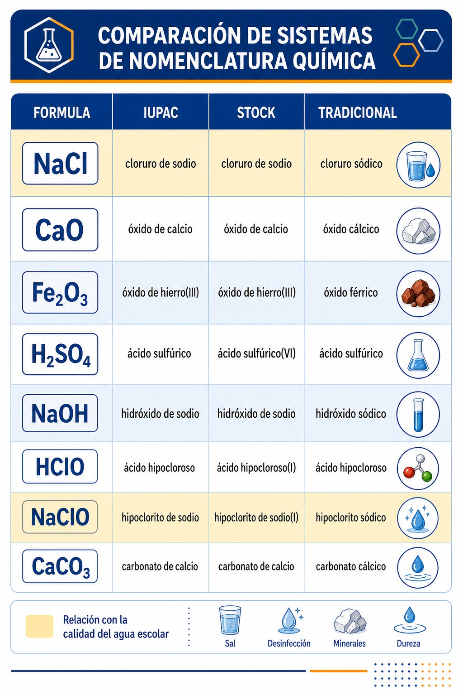
Datos -> formula -> operacion -> unidad -> interpretacion.
Con el banco resuelto, el siguiente paso es ordenar la evidencia en una tabla clara. Esta actividad convierte ejercicios sueltos en un producto de manual: una clasificacion util para decidir que se analiza despues.
| Componente posible | Tipo de materia | Evidencia | Dato faltante |
|---|---|---|---|
| Agua | Compuesto | Formula H2O | Pureza real de la muestra. |
| Cloruro de sodio | Compuesto ionico | Na+ y Cl- | Concentracion. |
| Aire disuelto | Mezcla de gases | O2, N2, CO2 | Cantidad disuelta. |
Rol: auxiliar de laboratorio escolar.
Escenario: la direccion solicita una primera interpretacion de la muestra del bebedero antes de invertir en pruebas mas costosas.
Instrucciones: construye una tabla con al menos ocho componentes o materiales relacionados con el caso. Para cada uno, indica tipo de materia, elementos presentes, enlace probable si aplica, formula usada y evidencia de clasificacion.
Entregable: archivo `u01_clasificacion_materia_nombre.pdf` con una tabla y una conclusion de 120 a 180 palabras.
No uses frases como "porque si" o "porque se ve". Cada decision debe tener propiedad, formula, tabla periodica o evidencia de separacion.
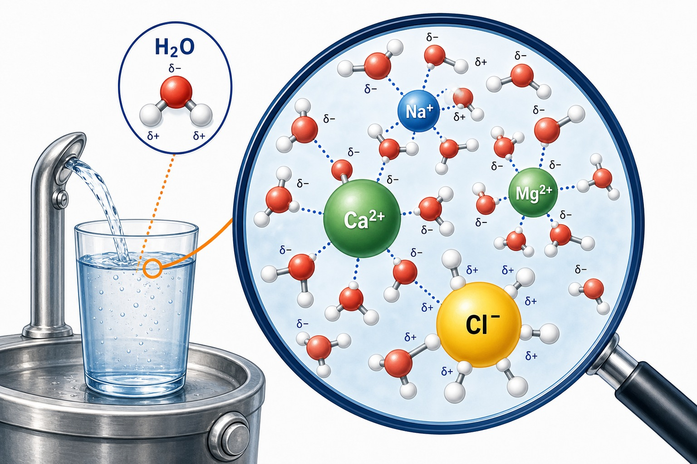
| Criterio | Logro esperado | Valor |
|---|---|---|
| Clasificacion | Distingue elemento, compuesto, mezcla homogenea y mezcla heterogenea. | 25% |
| Tabla periodica | Usa familias y tipo de elemento para justificar iones o enlaces. | 20% |
| Calculos | Aplica densidad, mol, masa molar o particulas con unidades correctas. | 25% |
| Argumento | Separa observacion, inferencia y dato faltante. | 20% |
| Presentacion | Entrega ordenada, legible y sin afirmaciones alarmistas. | 10% |
Antes de cerrar la unidad, revisa si cada respuesta cumple tres condiciones: tiene una categoria correcta, usa evidencia y mantiene unidades. Un calculo sin unidad queda incompleto; una clasificacion sin razon queda debil.
Escribe: "La idea mas importante de esta unidad fue..." y completala con una afirmacion verificable.
El mapa mental debe organizarse desde la muestra hasta las particulas. No debe ser decorativo: debe mostrar conexiones utiles para resolver problemas.
| Nodo central | Ramas obligatorias | Ejemplo |
|---|---|---|
| Muestra de agua | Fases, componentes, sustancias, mezclas | Agua con sales disueltas |
| Nivel atomico | Atomos, iones, enlaces | Na+, Cl- |
| Calculos | Densidad, mol, masa molar, particulas | n = m / M |
| Conclusion | Evidencia, inferencia, dato faltante | No afirmar pureza sin prueba. |
| Termino | Uso dentro de la unidad |
|---|---|
| Materia | Todo lo que tiene masa y ocupa espacio. |
| Sustancia pura | Materia con composicion fija. |
| Mezcla | Combinacion de componentes con proporcion variable. |
| Ion | Particula con carga electrica neta. |
| Enlace | Union entre atomos que explica propiedades. |
| Mol | Unidad para contar entidades quimicas a gran escala. |
| Masa molar | Masa de un mol de sustancia, expresada en g/mol. |
Correccion: la transparencia describe apariencia, no composicion.
Correccion: en MgCl2, el cloro se multiplica por 2 al calcular masa molar.
Correccion: si usas gramos y mililitros, la densidad queda en g/mL.
En equipo, comparen dos muestras simuladas: una con residuo bajo y otra con residuo alto. No decidan cual es "mejor" sin revisar que dato se midio y que dato falta.
| Muestra | Volumen | Residuo seco | Concentracion en g/L | Conclusion cautelosa |
|---|---|---|---|---|
| A | 500 mL | 0.18 g | ||
| B | 250 mL | 0.20 g |
La conclusion cautelosa debe usar frases como "segun este dato" o "se requiere medir..." para evitar afirmaciones excesivas.
La unidad deja una idea central: la quimica permite mirar mas alla de la apariencia. Una muestra puede parecer simple y aun asi contener componentes, iones y sustancias que necesitan ser nombradas con cuidado.
Para avanzar a la unidad de agua, el estudiante ya debe poder distinguir mezcla y compuesto, usar la tabla periodica para reconocer elementos, interpretar enlaces basicos y convertir gramos en moles con unidades correctas.
La ciencia es una forma organizada de escepticismo. - Carl Sagan
| Revision | Si / No | Correccion necesaria |
|---|---|---|
| Mi tabla separa sustancias, mezclas, iones y compuestos. | ||
| Mis calculos incluyen formula, sustitucion y unidad. | ||
| Use la tabla periodica para justificar al menos dos decisiones. | ||
| No afirme pureza solo por apariencia. | ||
| Mi conclusion menciona datos faltantes o limites del analisis. |
Entrega el cuadro de clasificacion y una conclusion breve. Este producto sera la base para interpretar pH, dureza y contaminacion en la unidad 2.
Manual 1 Quimica / Semestre 1 / Unidad 2
Diagnostico basico de pH, concentracion, dureza y contaminacion usando formulas, datos simulados y decisiones responsables.
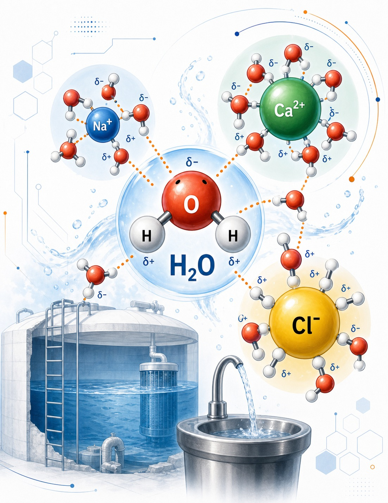
La unidad anterior enseno a clasificar la materia. Ahora la pregunta cambia: si el agua es una mezcla real, como se decide si sus datos son aceptables, dudosos o criticos?
Trabajaremos con un diagnostico escolar. No se busca emitir una alerta sanitaria completa; se busca aprender a leer datos, usar formulas basicas y proponer acciones proporcionales.
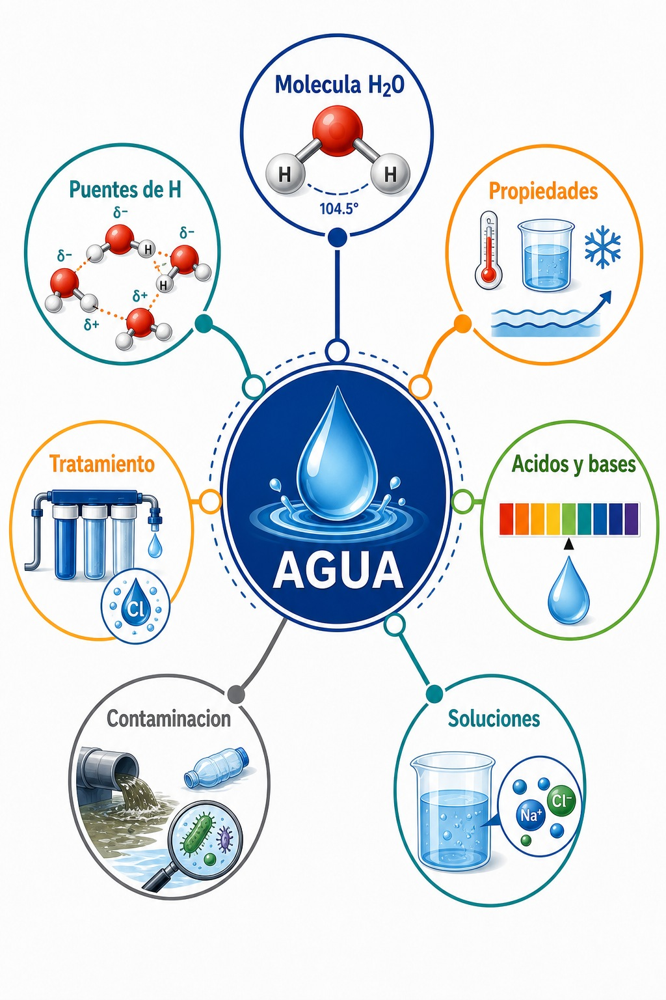
El equipo ya sabe que el agua del bebedero puede ser mezcla. La direccion entrega una segunda tarea: interpretar tres datos simulados de la muestra. Hay pH, dureza y solidos disueltos, pero nadie quiere conclusiones exageradas.
La situacion se parece a revisar signos vitales. Un solo numero no describe todo el estado de una persona; orienta la siguiente pregunta. En el agua ocurre igual: pH, dureza y concentracion son signos quimicos que deben leerse juntos.
La molecula de agua puede imaginarse como una persona que tiene dos manos con preferencias electricas distintas. Una parte de la molecula se orienta hacia cargas positivas y otra hacia cargas negativas. Por eso puede rodear iones y mantenerlos separados.
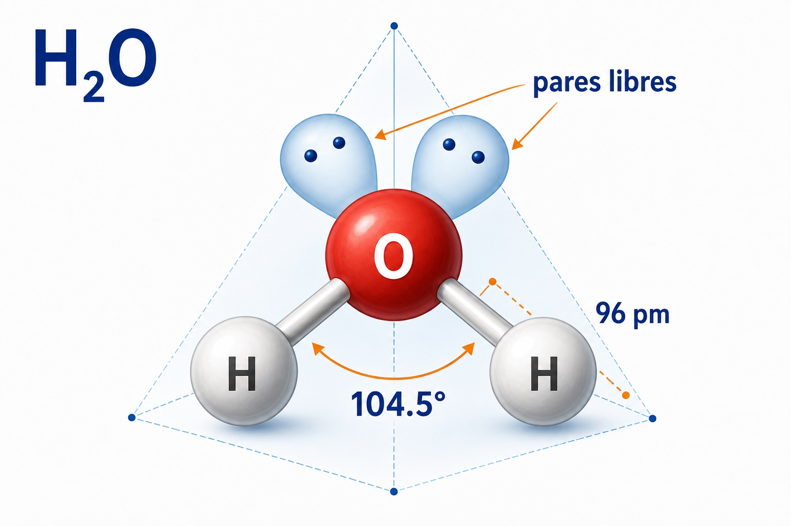
| Propiedad | Explicacion breve | Efecto visible |
|---|---|---|
| Polaridad | Distribucion desigual de carga. | Disuelve muchas sales. |
| Puentes de hidrogeno | Atracciones entre moleculas de agua. | Puntos de ebullicion y tension superficial altos. |
| Solvente | Medio que rodea y dispersa solutos. | Soluciones transparentes con solutos invisibles. |
El pH expresa la acidez o basicidad de una solucion segun la concentracion de iones hidrogeno. La escala es logaritmica: un cambio de una unidad representa un cambio de diez veces en [H+].
| Elemento | Significado | Unidad | Cuidado |
|---|---|---|---|
| pH | Medida de acidez o basicidad. | Sin unidad | No se suma como una escala lineal. |
| [H+] | Concentracion de ion hidrogeno. | mol/L o M | Debe ser positiva. |
| log | Logaritmo base 10. | Operacion matematica | Se usa calculadora cientifica. |
pH menor que 7 suele indicar acidez; pH mayor que 7 suele indicar basicidad. Cerca de 7 se considera neutro, pero el rango aceptable depende del contexto.
Si se conoce el pH, se puede estimar la concentracion de iones hidrogeno. Esto ayuda a entender que un pH de 5 no es "poco diferente" de un pH de 6; es diez veces mas concentrado en H+.
| Elemento | Significado | Unidad |
|---|---|---|
| [H+] | Concentracion del ion hidrogeno. | mol/L |
| 10 | Base de la potencia. | Sin unidad |
| -pH | Exponente negativo asociado al pH. | Sin unidad |
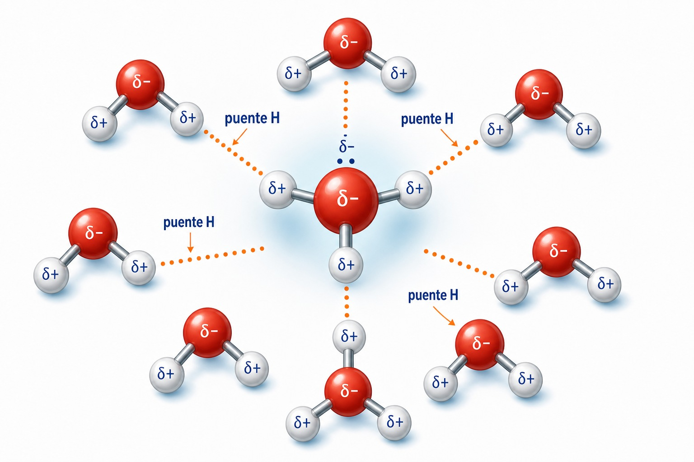
La molaridad mide cuanta cantidad de soluto hay por litro de solucion. Es una forma comun de expresar concentracion en quimica.
| Elemento | Significado | Unidad recomendada | Cuidado |
|---|---|---|---|
| M | Molaridad o concentracion molar. | mol/L | Tambien se escribe M. |
| n | Moles de soluto. | mol | Puede calcularse con n = m / masa molar. |
| V | Volumen de solucion. | L | Convertir mL a L antes de dividir. |
Si hay 0.020 mol de soluto en 0.500 L, entonces M = 0.020 mol / 0.500 L = 0.040 M.
Una dilucion reduce concentracion al aumentar volumen con solvente. La cantidad de soluto se conserva si no se pierde material.
| Elemento | Significado | Unidad | Nota |
|---|---|---|---|
| M1 | Concentracion inicial. | mol/L | Antes de diluir. |
| V1 | Volumen inicial. | mL o L | Usar la misma unidad que V2. |
| M2 | Concentracion final. | mol/L | Despues de diluir. |
| V2 | Volumen final. | mL o L | Volumen total final. |
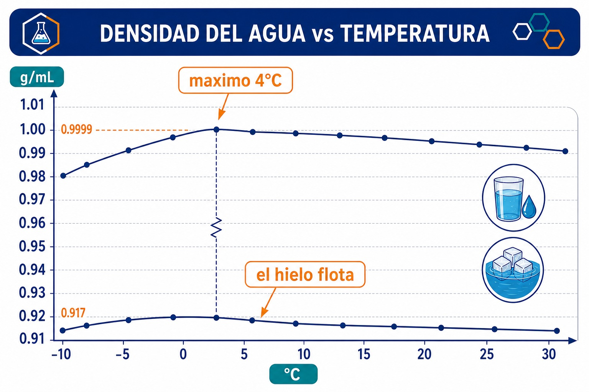
La dureza se relaciona principalmente con iones Ca2+ y Mg2+. Muchas tablas la expresan como mg/L de CaCO3, una unidad equivalente practica para comparar muestras.
| Elemento | Significado | Unidad | Cuidado |
|---|---|---|---|
| dureza total | Medida equivalente de Ca2+ y Mg2+. | mg/L como CaCO3 | No equivale a masa real de carbonato visible. |
| mg | Masa equivalente. | miligramos | 1000 mg = 1 g. |
| L | Volumen de muestra. | litro | Debe corresponder al volumen analizado. |
Agua dura no siempre es agua contaminada. Puede causar sarro, cambiar sabor o interferir con jabones, pero su interpretacion depende de rangos y contexto.
Los solidos disueltos totales se reportan con frecuencia como mg/L. La conductividad electrica aumenta cuando hay mas iones moviendose en el agua. No identifica por si sola cada ion, pero orienta el diagnostico.
| Dato | Que sugiere | Unidad comun | Limite de lectura |
|---|---|---|---|
| TDS | Cantidad aproximada de solidos disueltos. | mg/L | No dice que sustancias exactas hay. |
| Conductividad | Presencia de iones. | uS/cm | Depende de temperatura y tipo de ion. |
| Turbidez | Particulas suspendidas. | NTU | No equivale a toxicidad. |
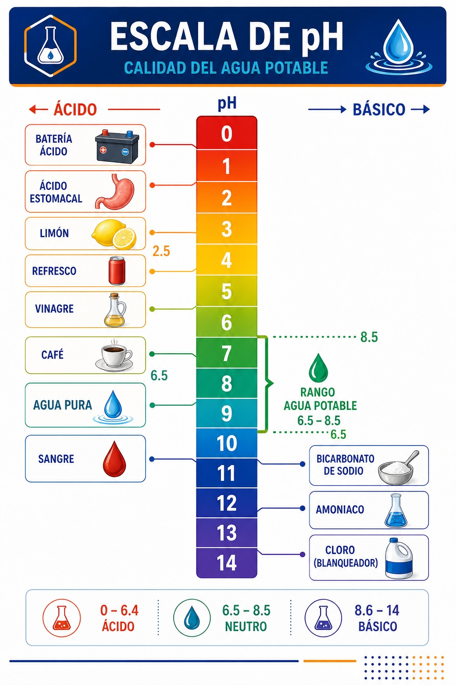
Una muestra tiene [H+] = 1.0 x 10-6 mol/L. Calcula el pH e interpreta.
La muestra es ligeramente acida respecto a 7. La conclusion responsable seria: el dato amerita comparacion con el rango esperado y, si es necesario, repetir la medicion.
No decir "pH 6 es peligroso" sin rango, contexto y repeticion. La quimica escolar pide interpretar con evidencia suficiente.
Se disuelven 2.92 g de NaCl en agua hasta completar 1.00 L de solucion. Calcula la molaridad. Usa M(NaCl) = 58.44 g/mol.
El resultado se expresa como 0.0500 M. La cantidad de soluto, el volumen final y las unidades sostienen el calculo.
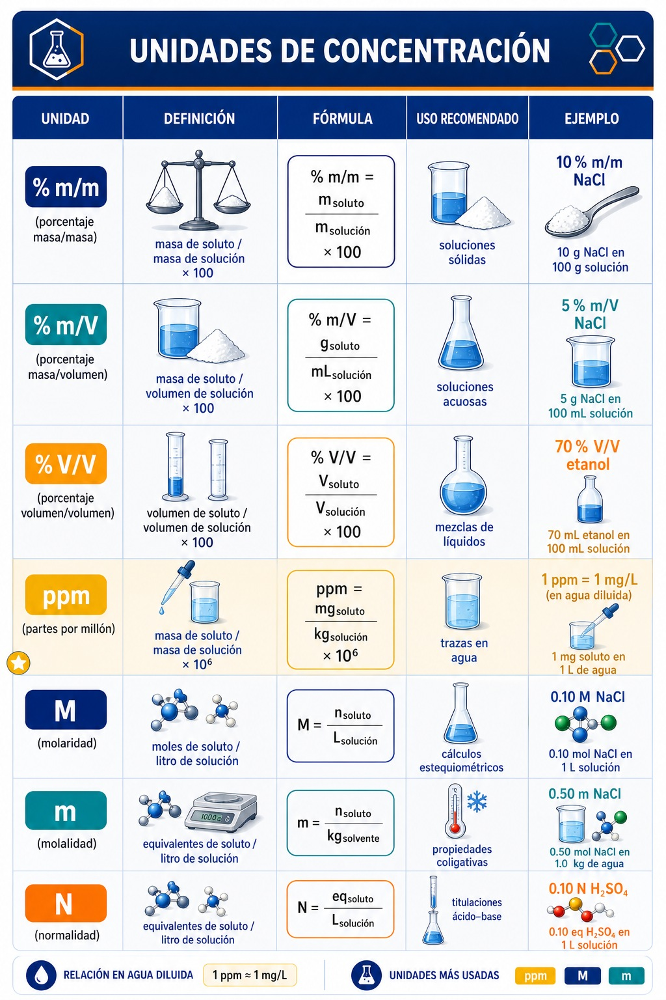
Se tienen 50.0 mL de una solucion 0.200 M. Se diluye hasta 250.0 mL. Calcula la concentracion final.
La concentracion baja porque el mismo soluto queda distribuido en un volumen mayor. Los mL se cancelan porque V1 y V2 usan la misma unidad.
Una muestra reporta dureza de 180 mg/L como CaCO3. Otra reporta 75 mg/L. Sin declarar contaminacion, se puede comparar su tendencia a formar sarro.
| Muestra | Dureza | Lectura cautelosa |
|---|---|---|
| A | 180 mg/L como CaCO3 | Mas dura, mayor posibilidad de sarro. |
| B | 75 mg/L como CaCO3 | Menos dura, menor posibilidad de sarro. |
El diagnostico final debe combinar este dato con pH, TDS, olor, color, turbidez y repeticion de medicion si el dato parece raro.
Para una lectura escolar, conviene clasificar cada dato como normal, dudoso o critico. La categoria no reemplaza normas oficiales; sirve como practica de razonamiento quimico.
| Indicador | Dato simulado | Lectura | Accion proporcional |
|---|---|---|---|
| pH | 6.4 | Dudoso leve | Repetir medicion y comparar. |
| Dureza | 210 mg/L | Alta para sarro | Revisar mantenimiento. |
| TDS | 480 mg/L | Moderado | Monitorear y documentar. |
| Turbidez | Visible | Critico escolar | No usar hasta revisar. |
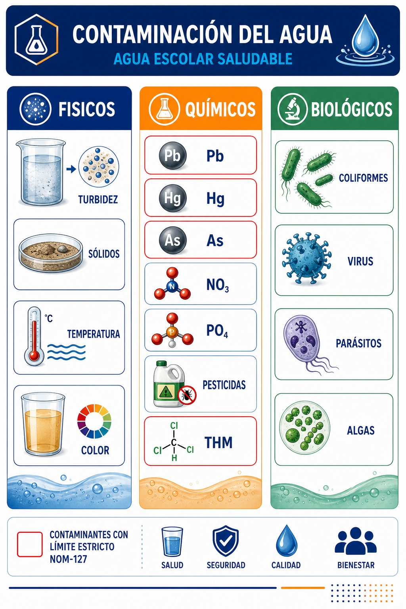
Elaborar un diagnostico basico de calidad del agua con datos simulados de pH, dureza, solidos disueltos y observacion visual.
| Elemento | Especificacion |
|---|---|
| Objetivo | Interpretar datos quimicos para decidir si la muestra requiere observar, repetir medicion o atender. |
| Materiales | Datos simulados, calculadora, tabla de rangos, ficha de diagnostico y criterio de evidencia. |
| Producto | Ficha de diagnostico con conclusion y accion recomendada. |
| Regla | Separar dato medido, interpretacion y recomendacion. |
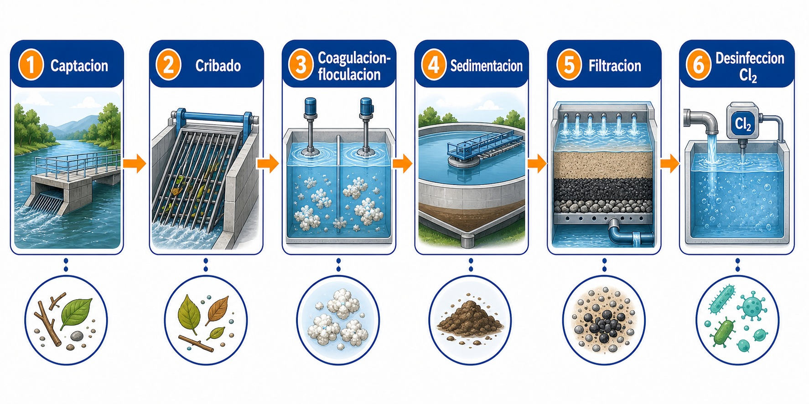
Resuelve los 18 ejercicios. Incluye formula, sustitucion, resultado con unidad e interpretacion. En los ejercicios de dictamen, evita alarmismo: usa los datos disponibles y menciona que dato faltaria para confirmar.
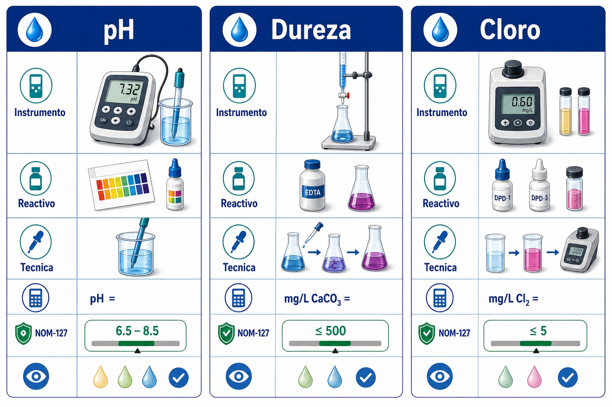
Dato -> formula -> unidad -> categoria -> accion recomendada.
Rol: tecnico escolar de calidad del agua.
Escenario: la direccion pide un dictamen preliminar de la muestra del bebedero con datos simulados de pH, dureza, TDS y observacion.
Instrucciones: organiza los datos, aplica al menos dos formulas, clasifica cada indicador y redacta una recomendacion proporcional.
Entregable: archivo `u02_diagnostico_agua_nombre.pdf` con ficha de datos, calculos y dictamen de 150 a 220 palabras.
El dictamen debe decir que se sabe, que se infiere y que falta confirmar. Esa separacion evita conclusiones falsas.
El agua es un solvente poderoso porque su estructura molecular le permite interactuar con muchas sustancias. Esa misma capacidad hace que una muestra escolar deba analizarse con datos, no solo con apariencia.
Al terminar la unidad, el estudiante debe poder interpretar pH, calcular concentraciones, explicar dureza y redactar un diagnostico cauteloso. La siguiente unidad conectara el agua con el aire, los gases, la combustion y la lluvia acida.
Medir es saber. - Lord Kelvin
Manual 1 Quimica / Semestre 1 / Unidad 3
Composicion del aire, gases, combustion, contaminantes, ppm y lluvia acida para conectar atmosfera y agua escolar.
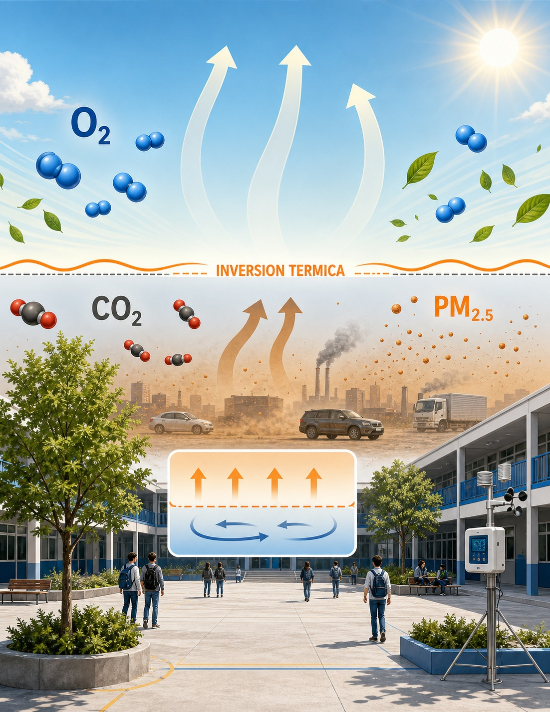
El agua escolar no esta aislada. Una cisterna abierta, un bebedero cerca de polvo o una zona con vehiculos pueden recibir influencia del aire. Por eso esta unidad conecta gases, reacciones y contaminantes con el diagnostico del entorno.
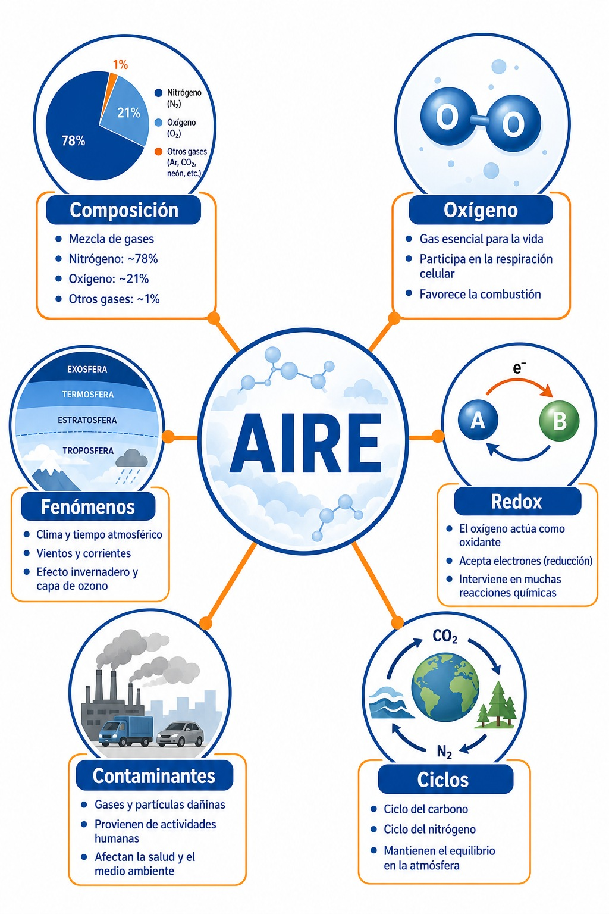
La cisterna esta cerca del comedor y de una zona donde pasan vehiculos. El equipo ya reviso la muestra de agua, pero ahora observa el entorno: polvo, humo ocasional, lluvia que cae sobre techos y superficies que escurren hacia desagues.
La pregunta cambia: que puede traer el aire hasta el agua? El aire limpio no es una sustancia pura; es una mezcla. Si esa mezcla incorpora particulas u oxidos, puede afectar superficies, lluvia y muestras cercanas.
El aire se parece a una mochila compartida: la mayor parte del espacio la ocupan nitrogeno y oxigeno, pero tambien viajan otros gases y particulas en menor cantidad. Aunque sean pocos, algunos componentes pueden tener efectos importantes.
No ver los gases no significa que no esten. El aire puede ser mezcla homogenea a escala cotidiana.
Un contaminante importa si tiene fuente, transporte y contacto con el agua o con personas.
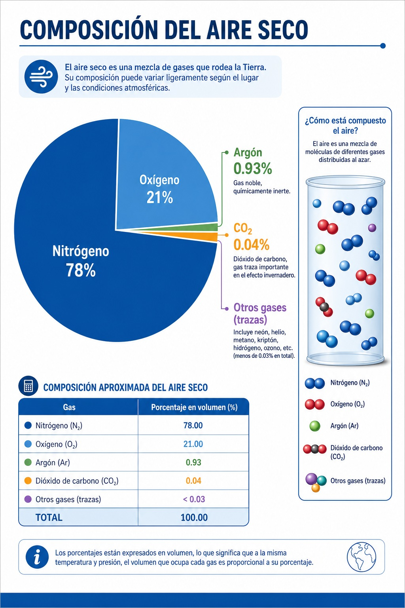
La composicion del aire se puede expresar como porcentaje en volumen. Esta forma compara el volumen de un gas con el volumen total de la mezcla.
| Elemento | Significado | Unidad | Cuidado |
|---|---|---|---|
| % gas | Porcentaje del gas en la mezcla. | % | Es una proporcion, no masa directa. |
| Vgas | Volumen del gas considerado. | L, mL, m3 | Usar la misma unidad que el volumen total. |
| Vaire | Volumen total de aire. | L, mL, m3 | Debe incluir todos los gases de la muestra. |
Si 100 L de aire contienen cerca de 21 L de oxigeno, el oxigeno representa aproximadamente 21% en volumen.
Los gases cambian de volumen con presion y temperatura. Para una aproximacion escolar se usa la ecuacion del gas ideal.
| Elemento | Significado | Unidad recomendada | Cuidado |
|---|---|---|---|
| P | Presion del gas. | atm | Debe coincidir con R. |
| V | Volumen del gas. | L | Convertir mL a L si hace falta. |
| n | Cantidad de sustancia. | mol | Resultado o dato. |
| R | Constante de gases. | 0.0821 L atm/mol K | Usar unidades compatibles. |
| T | Temperatura absoluta. | K | K = °C + 273.15. |
La formula se puede despejar. Por ejemplo: n = PV / RT.
Una bolsa contiene 2.00 L de aire a 1.00 atm y 25.0 °C. Estima los moles de gas usando PV = nRT.
El resultado es una estimacion de moles totales de gas en la bolsa. No separa nitrogeno, oxigeno ni otros gases.
La combustion es una reaccion donde una sustancia reacciona con oxigeno y libera energia. En combustion completa de hidrocarburos se forman CO2 y H2O.
| Elemento de la ecuacion | Significado | Unidad en calculos |
|---|---|---|
| CH4 | Metano, combustible. | mol o g |
| O2 | Oxigeno, reactivo del aire. | mol o L si se trabaja con gas |
| CO2 | Dioxido de carbono, producto. | mol, g o L |
| Coeficientes | Proporcion molar de reaccion. | mol |
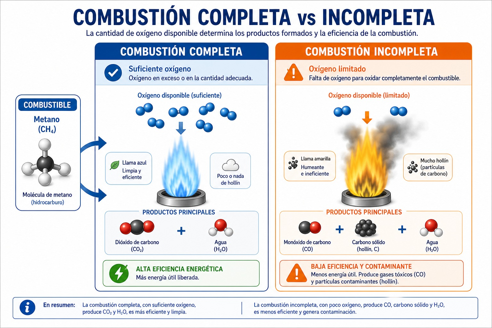
Muchas reacciones del aire son de oxidacion-reduccion. Para esta unidad basta con reconocer que hay transferencia o redistribucion de electrones. Cuando un combustible se oxida, el oxigeno participa como agente que permite formar oxidos.
Proceso asociado a perdida de electrones o aumento del numero de oxidacion.
Proceso asociado a ganancia de electrones o disminucion del numero de oxidacion.
En el caso escolar, no necesitamos resolver redox avanzado. Lo importante es conectar combustion, formacion de oxidos y posibles efectos ambientales.
Los ciclos quimicos muestran que los elementos no desaparecen: cambian de forma y se mueven entre atmosfera, agua, suelo y seres vivos. En una escuela, esta idea ayuda a ver rutas de contaminacion.
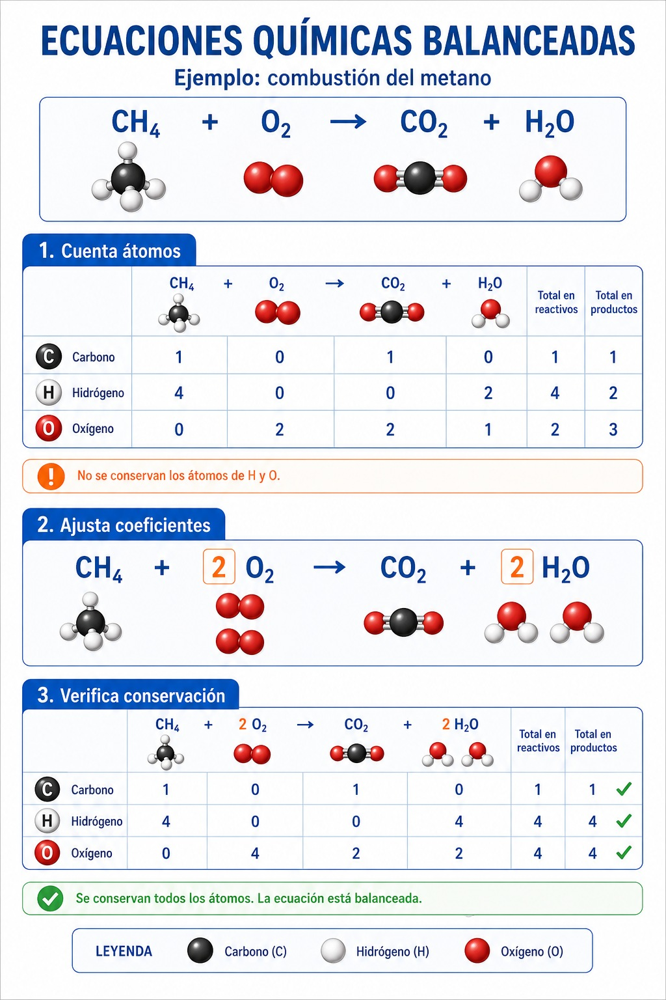
| Ciclo | Componente clave | Conexion con el caso |
|---|---|---|
| Carbono | CO2 | Combustion y efecto invernadero. |
| Nitrogeno | NOx | Smog y formacion de acidos. |
| Oxigeno | O2, O3 | Combustion y ozono troposferico. |
Los contaminantes del aire suelen estar en cantidades pequenas. Por eso se usa ppm, que significa partes por millon. Es una proporcion, no una masa universal.
| Elemento | Significado | Unidad | Cuidado |
|---|---|---|---|
| ppm | Partes por millon. | ppm | Compara partes de contaminante contra partes totales. |
| Vcontaminante | Volumen del gas contaminante. | mL, L, m3 | Usar misma unidad que Vaire. |
| Vaire | Volumen total de aire. | mL, L, m3 | Es el total de la mezcla. |
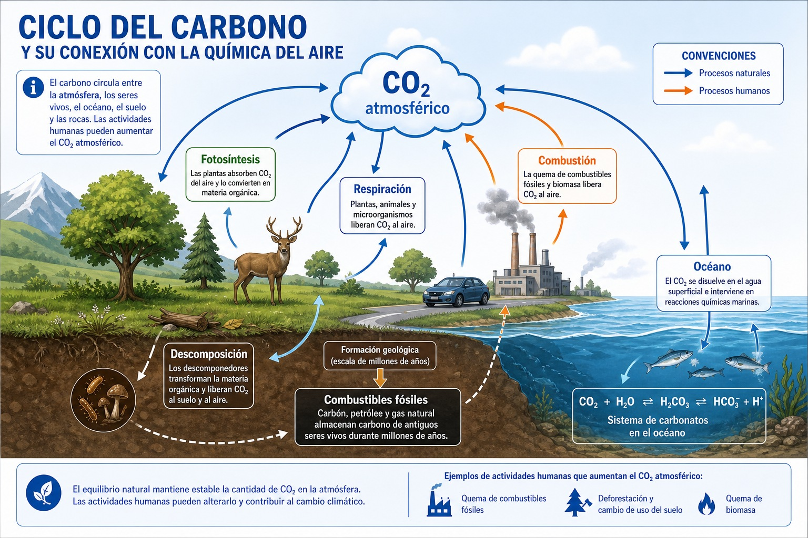
La lluvia acida se forma cuando ciertos oxidos reaccionan con agua y producen acidos. Los oxidos de azufre y nitrogeno pueden venir de combustion, procesos industriales o vehiculos.
Estas ecuaciones muestran una ruta quimica: gas en el aire, reaccion con agua y formacion de acido. En la escuela, la lluvia puede tocar techos, patios y recipientes antes de escurrir.
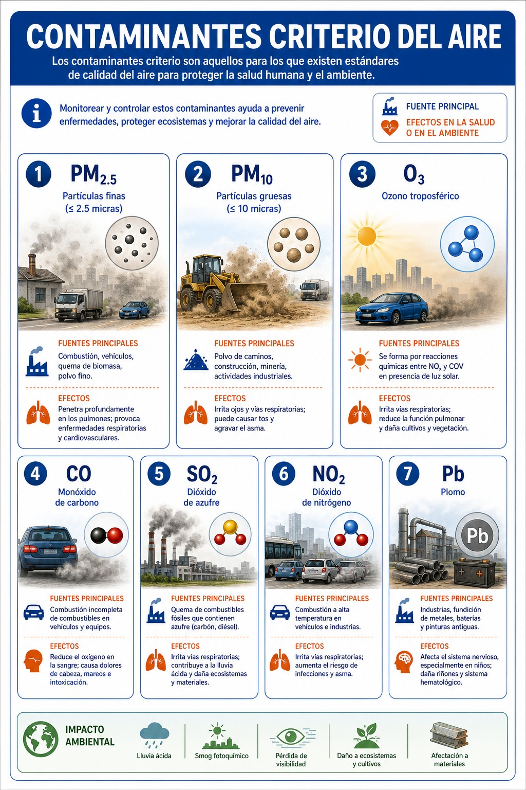
La lluvia naturalmente puede ser ligeramente acida por CO2 disuelto. Una lectura escolar debe comparar datos, no asumir contaminacion por una sola medicion.
| Dato | Lectura cautelosa | Accion |
|---|---|---|
| pH 5.8 | Ligeramente acida. | Registrar y comparar. |
| pH 4.7 | Mas acida que lo esperado. | Repetir y revisar fuentes. |
| pH 6.5 | Cercana a neutra en contexto escolar. | Monitorear. |
La evidencia mejora si se mide despues de varias lluvias y se relaciona con fuentes cercanas.
El smog combina contaminantes y condiciones atmosfericas. La inversion termica puede atrapar contaminantes cerca del suelo. El efecto invernadero se relaciona con gases que retienen radiacion infrarroja.
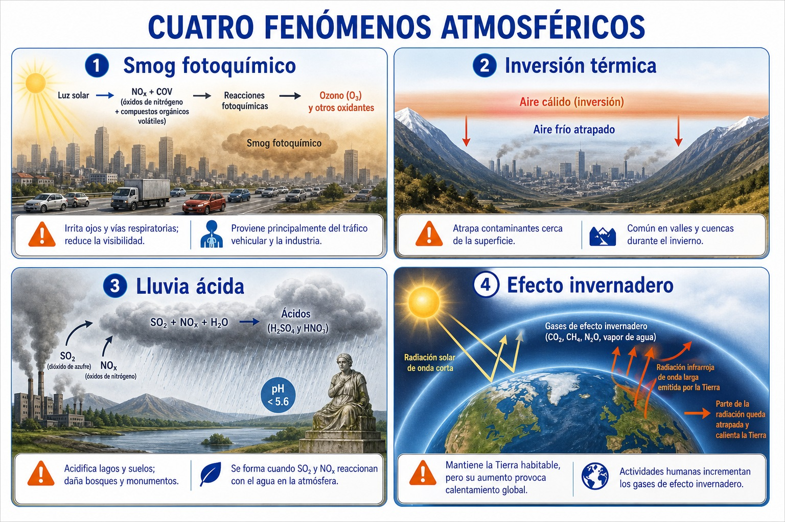
| Fenomeno | Idea clave | Relacion con la escuela |
|---|---|---|
| Smog | Mezcla de contaminantes en aire. | Aumenta exposicion cerca de trafico. |
| Inversion termica | Capa de aire impide dispersion vertical. | Contaminantes permanecen cerca del suelo. |
| Efecto invernadero | Gases retienen calor. | Contexto ambiental global. |
Relacionar fuentes de contaminacion atmosferica con efectos posibles sobre el agua escolar y proponer una medida preventiva realista.
| Elemento | Especificacion |
|---|---|
| Objetivo | Explicar como contaminantes atmosfericos pueden modificar el entorno del bebedero o la cisterna. |
| Materiales | Mapa escolar, tarjetas de fuentes, datos simulados de pH de lluvia y tabla de contaminantes. |
| Producto | Mapa de riesgo quimico del entorno escolar. |
| Criterio | Relacionar fuente, contaminante, reaccion, ruta y medida de control. |
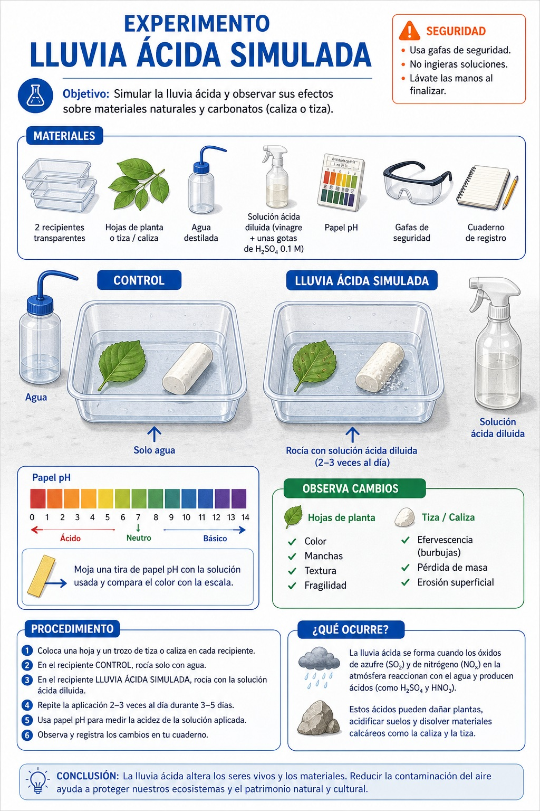
Resuelve los 16 ejercicios. En cada problema numerico incluye formula, sustitucion, unidad e interpretacion. En los problemas de mapa, escribe fuente, contaminante, ruta y accion.
Dato -> formula o relacion -> resultado -> efecto posible -> medida.
Usa R = 0.0821 L atm/mol K cuando trabajes con PV = nRT. Para temperatura, recuerda: K = °C + 273.15.
Rol: analista ambiental escolar.
Escenario: el equipo debe entregar un mapa de riesgo alrededor del bebedero o cisterna.
Instrucciones: dibuja el entorno, ubica al menos cinco fuentes, relaciona cada una con un contaminante, explica la posible ruta hacia el agua y propone una medida preventiva.
Entregable: archivo `u03_mapa_riesgo_aire_nombre.pdf` con mapa, tabla y conclusion de 150 a 220 palabras.
La conclusion debe incluir por lo menos una formula usada en la unidad: porcentaje, ppm, pH o PV = nRT.
| Criterio | Logro esperado | Valor |
|---|---|---|
| Relacion fuente-contaminante | Identifica fuentes plausibles y contaminantes coherentes. | 25% |
| Uso de formulas | Aplica porcentaje, ppm, pH o PV = nRT con unidades. | 25% |
| Ruta ambiental | Explica transporte desde aire hacia agua o superficie. | 20% |
| Medidas | Propone acciones realistas y proporcionales. | 20% |
| Presentacion | Mapa claro, tabla ordenada y conclusion cautelosa. | 10% |
El mapa mental debe conectar conceptos, no solo enlistarlos. Coloca "aire como mezcla" al centro y abre ramas hacia composicion, gases, reacciones, contaminantes, lluvia acida y riesgo escolar.
| Rama | Conceptos obligatorios | Formula asociada |
|---|---|---|
| Composicion | N2, O2, CO2 | % gas = Vgas / Vaire x 100 |
| Gases | Presion, volumen, temperatura, mol | PV = nRT |
| Contaminantes | NOx, SOx, CO, particulas | ppm = parte / total x 1,000,000 |
| Lluvia acida | Oxidos, agua, acidos, pH | pH = -log[H+] |
| Termino | Uso dentro de la unidad |
|---|---|
| Aire | Mezcla de gases con nitrogeno y oxigeno como componentes principales. |
| Combustion | Reaccion con oxigeno que produce energia y oxidos. |
| ppm | Proporcion para expresar cantidades muy pequenas en una mezcla. |
| NOx | Oxidos de nitrogeno asociados a combustion y smog. |
| SOx | Oxidos de azufre que pueden formar acidos con agua. |
| Lluvia acida | Precipitacion con acidez mayor por reaccion de oxidos con agua. |
Correccion: el aire es mezcla, aunque se vea uniforme.
Correccion: la temperatura debe estar en kelvin cuando se usa R = 0.0821 L atm/mol K.
Correccion: ppm expresa partes por millon; es una escala mas fina que porcentaje.
| Revision | Si / No | Correccion necesaria |
|---|---|---|
| Mi mapa distingue fuente, contaminante y ruta. | ||
| Use al menos una formula con unidades correctas. | ||
| Explique como el aire puede afectar agua o superficies. | ||
| No confundi aire limpio con sustancia pura. | ||
| Propuse medidas realistas, no alarmistas. |
Entrega mapa, tabla de fuentes y conclusion. Este cierre integra materia, agua y aire como un solo sistema quimico escolar.
Al cerrar esta unidad, el semestre ya tiene una secuencia completa: lenguaje de la quimica, materia, agua y aire. El caso del bebedero permitio pasar de la observacion a la evidencia, de la evidencia al calculo y del calculo a una recomendacion.
El estudiante no solo reconoce formulas; tambien sabe explicar que representa cada variable, en que unidad se trabaja y que limite tiene cada conclusion. Esa es la base para abordar unidades posteriores con reacciones, energia, suelo, alimentos y materiales.
La naturaleza usa solo los hilos mas largos para tejer sus patrones. - Richard Feynman
Manual 1 Quimica / Material final de apoyo
Anexo para cerrar el manual con recursos que se usaran durante los tres trimestres: portadas, materiales, lecturas complementarias, hojas de consulta y una tabla periodica imprimible.
Trimestre 1
En este trimestre el estudiante aprende a observar, medir, registrar, clasificar sustancias y explicar la materia desde particulas, enlaces y cantidades quimicas.
| Recurso | Uso en clase | Producto esperado |
|---|---|---|
| Bitacora de muestra | Registrar fecha, lugar, volumen, color, olor, temperatura y responsable. | Registro verificable de observacion. |
| Tarjetas de clasificacion | Separar elemento, compuesto, mezcla homogenea y mezcla heterogenea. | Cuadro comparativo con razon quimica. |
| Tabla de unidades | Convertir g, kg, mL, L, cm3 y unidades de densidad. | Calculos con unidades consistentes. |
| Tabla periodica | Identificar elementos, familias, simbolos y masas atomicas aproximadas. | Justificacion de enlaces y masa molar. |
El estudiante selecciona cinco sustancias del entorno escolar, las clasifica y anota una razon que use al menos una propiedad observable o una formula quimica.
Trimestre 2
En este trimestre el estudiante interpreta el agua como solvente, calcula concentraciones, analiza pH, revisa dureza y redacta un diagnostico responsable.
| Recurso | Uso en clase | Producto esperado |
|---|---|---|
| Escala de pH | Comparar acidez, neutralidad y basicidad con datos numericos. | Interpretacion cautelosa del pH. |
| Ficha de diagnostico | Ordenar pH, dureza, TDS, turbidez y observaciones. | Dictamen preliminar del bebedero. |
| Calculadora cientifica | Usar logaritmos, potencias de 10 y operaciones de molaridad. | Calculos con formula visible. |
| Tabla de rangos simulados | Clasificar datos como normales, dudosos o criticos en practica escolar. | Recomendacion proporcional. |
Los rangos del manual son para practica escolar. Si se requiere decision sanitaria real, se debe consultar norma local, laboratorio certificado y autoridad correspondiente.
Trimestre 3
En este trimestre el estudiante relaciona gases, combustion, ppm, lluvia acida y rutas ambientales para construir un mapa de riesgo quimico.
| Recurso | Uso en clase | Producto esperado |
|---|---|---|
| Mapa escolar | Ubicar fuentes cercanas: trafico, cocina, polvo, basura, obras y escurrimientos. | Mapa de ruta ambiental. |
| Tarjetas de contaminantes | Relacionar CO2, CO, NOx, SOx y particulas con fuentes posibles. | Tabla fuente-contaminante. |
| Datos de pH de lluvia | Interpretar acidez con pH y comparar mediciones. | Conclusion sobre lluvia acida simulada. |
| Formula de ppm | Expresar contaminantes en cantidades pequenas. | Calculo y lectura de exposicion. |
| Material | Uso | Recomendacion |
|---|---|---|
| Cuaderno o bitacora | Registrar observaciones, datos, errores y conclusiones. | Usar fecha y nombre de equipo en cada practica. |
| Calculadora cientifica | Potencias, logaritmos, conversiones y formulas. | Revisar modo y notacion antes de entregar. |
| Tabla periodica impresa | Simbolos, numeros atomicos y masas atomicas aproximadas. | Marcar metales, no metales y familias relevantes. |
| Regla, colores y hojas carta | Mapas, tablas, esquemas y reportes. | No usar color como unico codigo; agregar etiquetas. |
| Recipientes limpios | Simulacion de toma de muestra. | Rotular antes de llenar. |
| Guantes y lentes | Practicas demostrativas con supervision. | No manipular sustancias sin autorizacion docente. |
| Habilidad | Lectura sugerida | Pregunta guia |
|---|---|---|
| Medir | Errores, precision e incertidumbre en mediciones escolares. | Que dato podria cambiar si repito la medicion? |
| Clasificar | Sustancias puras, mezclas y fases en ejemplos cotidianos. | Que evidencia sostiene mi clasificacion? |
| Calcular | Unidades, molaridad, densidad, pH y ppm. | Mis unidades se cancelan o se contradicen? |
| Interpretar | Como escribir conclusiones con limites. | Que se sabe, que se infiere y que falta confirmar? |
| Comunicar | Reportes breves para una audiencia no experta. | Mi recomendacion es proporcional al dato? |
Estas lecturas pueden asignarse como entrada de clase, tarea corta o recuperacion para estudiantes que necesiten reforzar un bloque.
| Seccion | Contenido minimo | Extension sugerida |
|---|---|---|
| Titulo | Nombre de la practica, equipo, fecha y grupo. | 1 bloque |
| Pregunta | Que se quiere averiguar con la muestra o los datos. | 1 a 2 lineas |
| Datos | Tabla con unidades visibles y observaciones. | 1 tabla |
| Calculos | Formula, sustitucion, resultado y unidad. | 2 a 4 calculos |
| Interpretacion | Lectura de resultados sin exagerar. | 80 a 120 palabras |
| Recomendacion | Accion proporcional y dato faltante. | 40 a 80 palabras |
| Formula | Variables | Unidades | Uso |
|---|---|---|---|
| rho = m / V | rho densidad, m masa, V volumen | g/mL, g, mL | Comparar muestras por masa y volumen. |
| n = m / M | n moles, m masa, M masa molar | mol, g, g/mol | Pasar de gramos a moles. |
| N = n NA | N particulas, n moles, NA Avogadro | particulas, mol, particulas/mol | Relacionar moles con entidades. |
| pH = -log[H+] | pH acidez, [H+] concentracion | sin unidad, mol/L | Interpretar acidez. |
| M = n / V | M molaridad, n moles, V volumen | mol/L, mol, L | Concentracion de soluciones. |
| M1V1 = M2V2 | concentracion y volumen inicial/final | M y L o mL consistentes | Diluciones. |
| PV = nRT | P presion, V volumen, n mol, R constante, T kelvin | atm, L, mol, L atm/mol K, K | Gases. |
| ppm = parte / total x 1,000,000 | parte y total en misma unidad | ppm | Contaminantes en baja cantidad. |
Usala para localizar simbolo, numero atomico, familia y tipo general de elemento. Para calculos finos de masa molar, confirma la masa atomica con la tabla oficial que entregue el docente.
Estas dos filas se separan para que la tabla principal quepa en una hoja. Siguen siendo parte de los periodos 6 y 7.
Ubica primero el simbolo y el numero atomico. Despues revisa si el elemento es metal, no metal, halogeno o gas noble. Esa lectura ayuda a anticipar enlace, ion probable y comportamiento general en agua o aire.
Este anexo no reemplaza las unidades del manual; funciona como zona de consulta. Las portadas trimestrales ayudan a separar los momentos del curso, las lecturas refuerzan ideas clave y la tabla periodica permite resolver clasificaciones y calculos sin interrumpir la practica.
| Antes de entregar el semestre | Verificacion |
|---|---|
| Revise que cada trimestre tenga portada. | |
| Use al menos una lectura complementaria por unidad. | |
| Inclui formulas con unidades en mis reportes. | |
| Use la tabla periodica para justificar enlaces, iones o masa molar. | |
| Separe datos, inferencias y recomendaciones. |
Al cerrar el semestre, el estudiante selecciona una evidencia de cada trimestre y explica en una pagina como mejoro su forma de observar, calcular e interpretar fenomenos quimicos.